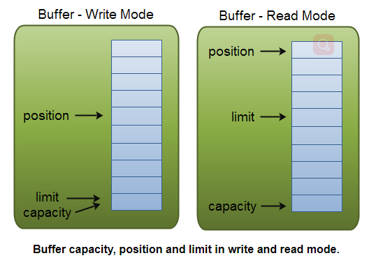

Java NIO(2) Buffer
Buffer 本质上是内存区域上的一块你可以读写的内存块。这个内存块被包在 NIO Buffer对象中，我们通过 Buffer 提供的一系列方法来便捷的操作这个内存块。
Buffer 的基本使用
Buffer 的使用有下面四个典型的过程：
- 写数据到 Buffer
- 调用 buffer.flip()
- 从 Buffer 读取数据
- 调用 buffer.clear() 或 buffer.compact()
当往 Buffer 里面写数据的时候，Buffer 对象会跟踪写了多少数据。当你需要读取数据的时候，你需要调用 flip() 方法，将写模式转换成读模式。当读取完数据，需要调用clear() 或compact() 方法来清楚buffer里的数据，才可以重新进行写数据。
clear和compact区别：
clear() 方法清空buffer里面的全部数据，写数据的时候从0开始写；
compact()方法会清空已读的数据，将未读的数据移动到buffer开始处，写数据的时候，从未读数据之后开始写；
下面是一个简单的例子:
RandomAccessFile aFile = new RandomAccessFile("data/nio-data.txt", "rw");
FileChannel inChannel = aFile.getChannel();
//create buffer with capacity of 48 bytes
ByteBuffer buf = ByteBuffer.allocate(48);
int bytesRead = inChannel.read(buf); //read into buffer.
while (bytesRead != -1) {
buf.flip(); //make buffer ready for read
while(buf.hasRemaining()){
System.out.print((char) buf.get()); // read 1 byte at a time
}
buf.clear(); //make buffer ready for writing
bytesRead = inChannel.read(buf);
}
aFile.close();Buffer 容量（capacity）、位置（position）和限制（limit）
容量：论buffer在读模式还是写模式，都是一样的，即buffer可容纳的数据量；
位置和限制：由buffer写模式或读模式决定。
如下图所示：

当调用 flip()，buffer从写模式切换为读模式，position为0，limit为可读取的最多的数据量；
当调用clear()，buffer从读模式切换为写模式，position为0，limit为容量大小；
当调用compact()，buffer从读模式切换为写模式，position为上次未读数据大小，limit位容量大小；
感受一下：
public static void main(String[] args) throws IOException {
IntBuffer buf = IntBuffer.allocate(20);
System.out.println("----init----");
printParameters(buf);
System.out.println("----put 1----");
buf.put(1);
printParameters(buf);
System.out.println("----put 2 3 4 5----");
buf.put(2);
buf.put(3);
buf.put(4);
buf.put(5);
printParameters(buf);
System.out.println("----flip()----");
buf.flip();
printParameters(buf);
System.out.println("----call get()----");
System.out.print("read: ");
for (int i=0;i <= buf.limit() - 1; i++){
System.out.print(buf.get()+" ");
}
System.out.println();
printParameters(buf);
System.out.println("----call flip() and get() 3 times----");
buf.flip();
System.out.print("read: ");
for (int i=0;i < 3; i++){
System.out.print(buf.get()+" ");
}
System.out.println();
printParameters(buf);
System.out.println("----call compact()----");
buf.compact();
printParameters(buf);
}
private static void printParameters(IntBuffer buf) {
System.out.println("limit:" + buf.limit());
System.out.println("position:" + buf.position());
System.out.println("capacity:" + buf.capacity());
}输出：
----init----
limit:20
position:0
capacity:20
----put 1----
limit:20
position:1
capacity:20
----put 2 3 4 5----
limit:20
position:5
capacity:20
----flip()----
limit:5
position:0
capacity:20
----call get()----
read: 1 2 3 4 5
limit:5
position:5
capacity:20
----call flip() and get() 3 times----
read: 1 2 3 limit:5
position:3
capacity:20
----call compact() and read 1 2 3----
limit:20
position:2
capacity:20NIO Buffer类型包括：
ByteBuffer
MappedByteBuffer
CharBuffer
DoubleBuffer
FloatBuffer
IntBuffer
LongBuffer
ShortBuffer
顾名思义，允许你使用不同类型的Buffer，操作不同类型的数据。
分配Buffer大小：
ByteBuffer buf = ByteBuffer.allocate(48);
CharBuffer buf2 = CharBuffer.allocate(1024);写数据到Buffer：
1、通过Channel：
int bytesRead = inChannel.read(buf); //read into buffer.2、通过put()方法：
buf.put(127); 从Buffer读数据：
1、通过Channel:
int bytesWritten = inChannel.write(buf);2、 通过get()方法：
byte aByte = buf.get(); rewind()
只重置position为0，不改变limit。
rewind，flip， clear 源码对比，可以简单感受一下：
public final Buffer rewind() {
position = 0;
mark = -1;
return this;
}
public final Buffer flip() {
limit = position;
position = 0;
mark = -1;
return this;
}
public final Buffer clear() {
position = 0;
limit = capacity;
mark = -1;
return this;
}mark() and reset()
mark() 标记一个位置，再次调用reset()的时候，position回到mark()标记的位置。
源码：
public final Buffer mark() {
mark = position;
return this;
}
public final Buffer reset() {
int m = mark;
if (m < 0)
throw new InvalidMarkException();
position = m;
return this;
}